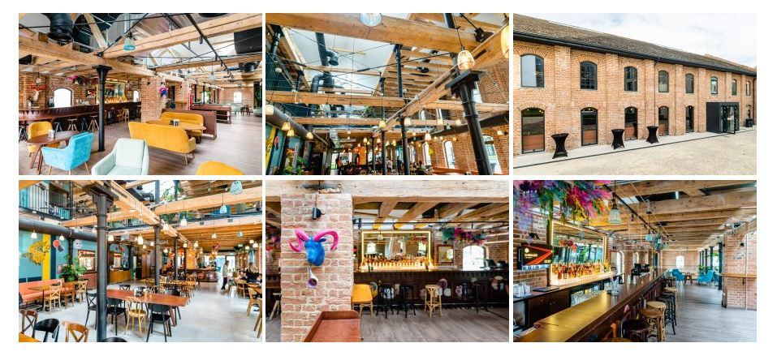
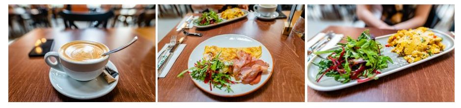
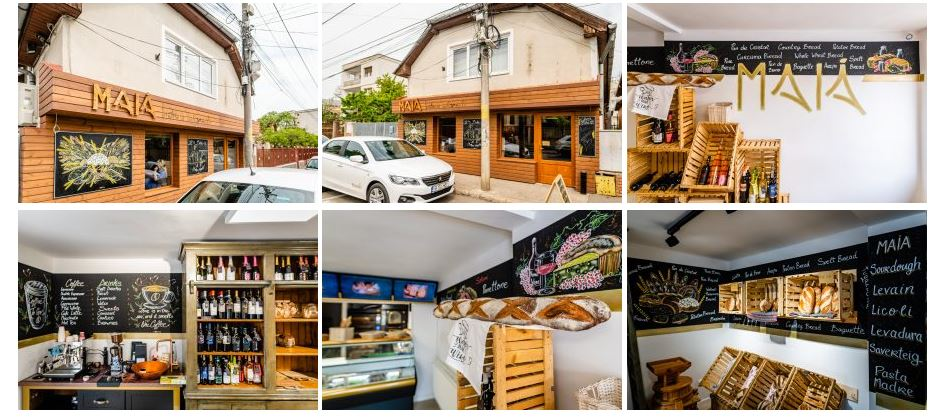
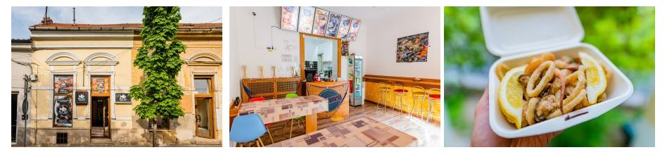
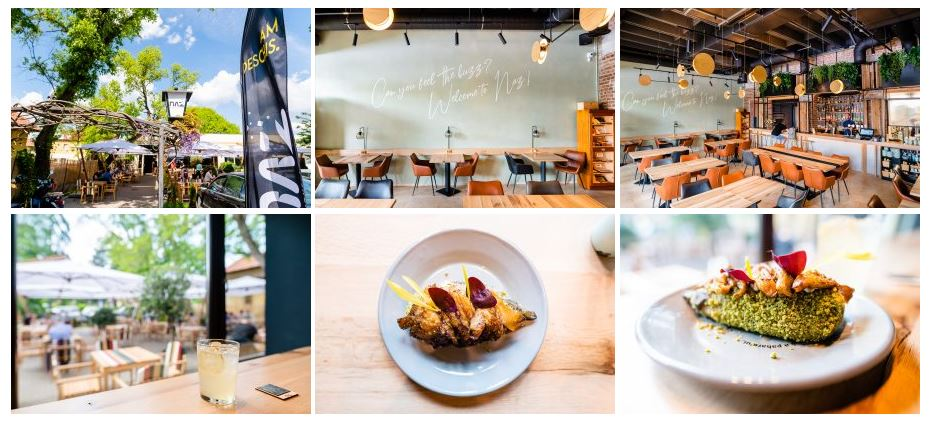

Am pornit din nou la drum, în căutarea noilor localuri din Cluj și la fel ca de fiecare dată, avem ce să vă povestim. Lună de lună venim cu noi locuri pe care le puteți vizita, iar în ultima perioada apar tot mai multe, fapt ce ne dă speranță că ne apropiem încet de o perioadă similară cu cea pre-pandemică. Ce putem noi să facem acum, este să îi susținem pe toți cei ce îndrăznesc să vină cu idei și concepte noi. Cine știe, poate vom găsi următorul nostru local favorit, însă pentru a ajunge acolo, trebuie să le oferim măcar o șansă.
Cele patru locuri vizitate de noi vin cu foarte mult potențial pentru dezvoltarea industriei ospitalității a orașului. Vă lăsăm aici un scurt preview, ca să înțelegeți mai bine despre ce vorbim. Bruto ne propune un loc de întâlnire a tuturor generațiilor, perfect atât pentru o ieșire la bere, cât și pentru o întâlnire de afaceri. Maiá duce ideea de brutărie artizanală la un alt nivel, cu preparate proaspete, pregătite după rețete proprii. Bucătăria mediteraneană se apropie din ce în ce mai tare de Cluj, cu ajutorul restaurantului Mare Nera, care vine cu tot felul de combinații cu pește și fructe de mare. Nu în ultimul rând, NAZ este locul în care te simți ca acasă, acel acasă cu mâncare absolut delicioasă, oameni faini și atmosfera primitoare. V-am făcut curioși, așa-i? Noi am fost și vă povestim mai jos, în detaliu, cum a fost experiența la fiecare dintre ele.
Prima oprire: Bruto. Am mers acolo dis de dimineață, la micul dejun. Localul de află pe strada Onisifor Ghibu 20a. Este fix în spatele The Office, în complexul Record Park, lângă Stables. E super ușor de găsit, îndiferent din ce direcție mergi. E un loc efervescent, care îți atrage atenția prin culorile și desenele de pe geamuri, deci e imposibil de ratat dacă ajungi în zonă. Când am intrat, cineva repara o ușă. M-a văzut, s-a oprit și m-a salutat. Aveam impresia că intru în casa unui prieten. Mai că mi-a venit să mă opresc să îl ajut.
Interiorul este spațios și foarte chic, situat pe două niveluri, cu baruri la fiecare dintre ele și multe locuri. Structura meniului mi s-a părut bine structurată, cu mic-dejun pentru dimineața, meniul zilei la prânz și tot felul de minunății pentru seară. Starters, main course, salate, paste și deserturi în multe variante și combinații. Noi am comandat o omletă cu ciuperci și gorgonzola și Basque Scrambled Eggs, cu legume. Plaiting-ul arăta bine, deși farfuriile au fost puțin incomode pentru mâncat. Prețul a fost 24 de lei pentru fiecare dintre ele, iar cum majoritatea preparatelor sunt peste medie, noi am aflat din alte recenzii că preparatele care se pot comanda seara “merită toți banii”.
A doua oprire a fost la o brutărie artizanală din Gheorgheni, Maiá. Știm, nu e chiar local, dar e o bună recomandare pentru #newintown. Se află pe strada Vasile Lupu 77, undeva printre case și blocuri. Nu e foarte vizibilă, așa că este destul de greu să ajungi aici dacă nu ești din zonă sau dacă nu vii special pentru pâinea lor proaspătă. Încă de la intrare mirosea a pâine coaptă, iar după ce am intrat, puteam să îl vedem pe brutar în acțiune, masa lui de lucru fiind fix în spatele vitrinei cu tot felul de bunătățuri italiene. Pe lângă diversele sortimente de pâine, ciabatta și baghete, mai găsim și prăjituri, produse de patiserie, sandwich-uri proaspăt făcute, vinuri, mezeluri sau brânzeturi. Pâinea este proaspătă, făcută după rețete italienești, iar deși prețurile sunt destul de mari, între 20 și 30 de lei, gustul și frăgezimea lor merită toți banii. Noi am luat și un croissant cu migdale, dar nu pot să descriu cât de bun a fost. Cu fulgi și sirop de zahăr în exterior și cremă de migdale în interior, crocant, fraged și cremos în același timp, a fost un adevărat deliciu. Nu am mai mâncat de multă vreme un croissant atât de bun. Nu știu dacă v-am convins, însă eu voi reveni cu siguranță să mai încerc și alte preparate.
La Mare Nera am zis că mergem pentru prânz, însă am mâncat atât de bine înainte, încât am reprogramat vizita pentru o altă zi. Am auzit de ei deja de ceva vreme, de pe aplicațiile de delivery, însă nu de mult au deschis și locația fizică. Se află foarte aproape de Casa de Cultură a Studenților, pe strada Gheorghe Șincai, nr. 9. Și dacă numele lui nu spune suficiente, vă spunem noi: este vorba despre multe fructe de mare. Localul nu este tocmai spațios, însă dacă dorești să iei masa acolo, poți. În ceea ce privește meniul, momentan au numai 6 opțiuni din care poți alege: Anchovy, Fritto Misto, Shrimp on the hub, Cozze alla marinara, Cozze alla tartina și Seafood platter. Cu toate acestea, gustul a fost surprinzător de bun chiar și la pachet, porțiile au fost suficient de mari, iar prețul, pentru o porție de Fritto Misto, 40 de lei. Noi am zice că e un deal bun, cu atât mai mult cu cât Clujul nu este tocmai ofertant, din punct de vedere al localurilor specializate pe fructe de mare & pește. Sau cel puțin nu a fost vreodată considerat așa, însă în ultima vreme descoperim tot mai multe opțiuni bune.
Dacă vrei să scapi puțin de aglomerația zonei centrale, NAZ este locul ideal. Se află în Piața Engels, pe strada Moise Nicoară 1. Zona este una absolut superbă, cu mult verde oriunde privești. Terasa este generoasă, la fel și zona din interior, iar totul este amenajat cu mult bun gust. Am aflat că este afacere de familie și se resimte acest lucru, pentru că imediat cum le treci pragul, te simți ca acasă și ai ocazia să interacționezi direct cu proprietarii, atât în bar cât și pe sală. Au început să amenajeze locul încă de anul trecut și abia acum au reușit să deschidă, însă atenția la detalii se poate vedea cu ochiul liber. Pe mine m-au cucerit când am găsit la toaletă absorbante și alte produse de igienă, plus spațiu pentru schimbat copiii. Pare că s-au gândit la mai multe mici detalii ce fac diferența.
După ce am și gustat din preparatele lor, am devenit mare fan. Am încercat un preparat pe care nu-l mai întâlnisem înainte: vânătă coaptă cu migdale, wassabi și pleurotus cu caramel din apă de vinete. A fost o combinație interesantă de gusturi care m-a surprins plăcut. Mă așteptam să fie foarte picant, de la wassabi, însă a fost echilibrat, iar textura te surprinde. Prețul a fost de 34 de lei, însă cred că experiența pe care o oferă, merită toți banii. Am mai pus ochii pe câteva preparate interesante la ei, cum ar fi conopida în crustă de cocos cu veloute de hribi, spaghetti chitarra cu pastrami și anghinare sau poate ceva dulce, pandișpan cu roșcove și Zetea Silvorium, cremă de fistic și cremă de trandafiri, fistic crud și polen, iar lista poate continua cu carnea pregătită la smoker, semnătura lor. Așa că neapărat o să revenim să încercăm și restul preparatelor.
La început a fost… nimeni și nimic care să ne vorbească despre viața orașului, despre ce se întâmplă în materie de evenimente și localuri pe plan local, niciun motiv care să ne scoată din casă.
Everyday we’re clujlife(ing). Ieșim din casă, vedem ce se întâmplă, ce mai e nou, ce mai zice lumea, ce-ar mai fi interesant de făcut, și apoi îți povestim și ție. Facem asta din Ianuarie 2008. Prezența aceasta îndelungată ne-a adus destule cunoștințe și curaj încât să abordăm subiecte pe care nu le ”atinge” nimeni. Avem informații pe care nu le găsești în altă parte și acces la mulți oameni din varii domenii.